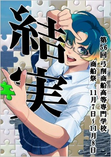

車でお越しの方
しまなみ海道の因島からフェリーで渡ります。学校の正門からは入れません。松原海水浴場の方から駐車場へお入りください。できるだけ乗り合わせてのご来場をお願いします。
Welcome
船どうしがあいさつを交わすとき、マストに国際信号旗を掲げます。「U」と「W」の旗に数字の「2」を加えた「UW2」は「ようこそ」の合図です。
瀬戸内海に浮かぶ弓削島の弓削商船高等専門学校で、第56回 商船祭を開催します。展示やイベント、模擬店、軽音部と吹奏楽部のライブ、練習船「弓削丸」の体験航海など、学生がつくる2日間をお楽しみください。同じ日にオープンキャンパスも開催します。
Program
展示やステージには、学生それぞれの個性や工夫、努力の成果が詰まっています。
Training ship
学校桟橋から、練習船「弓削丸」に乗って海へ。参加は当日の受付で、各日 先着70人までです。

Access
弓削島へは、船で渡ってお越しください。帰りの船の時刻も、先に確かめておくと安心です。
家老渡フェリー（因島・家老渡港 ⇔ 弓削・上弓削港）は、2026年4月から日曜日の全便が運休になっています。日曜日は、生名フェリーや快速船などをご利用ください。
しまなみ海道の因島からフェリーで渡ります。学校の正門からは入れません。松原海水浴場の方から駐車場へお入りください。できるだけ乗り合わせてのご来場をお願いします。
今治港から快速船で約70分、因島の土生港から快速船などで10〜15分ほどで弓削港に着きます。弓削港から学校までは約1.6km、歩いて20分ほどが目安です。